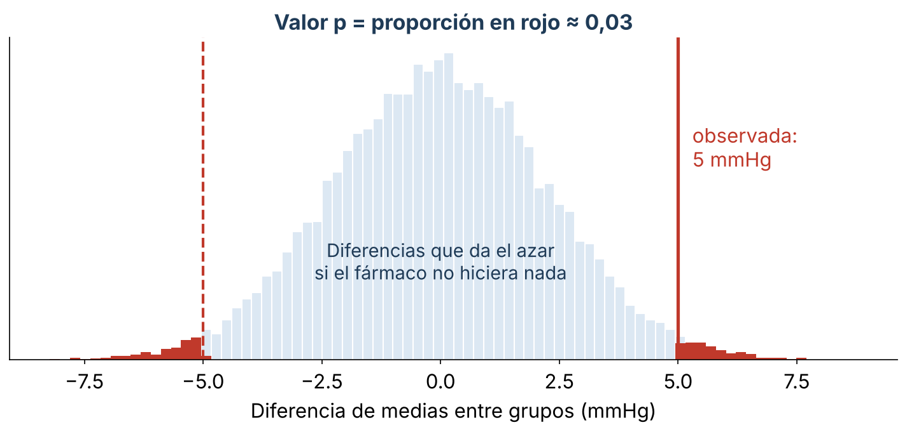
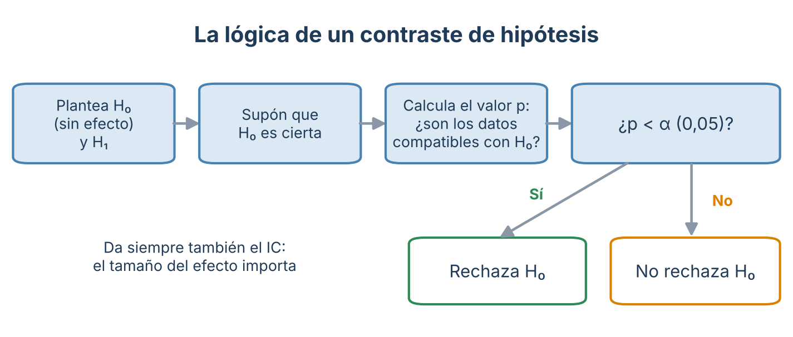
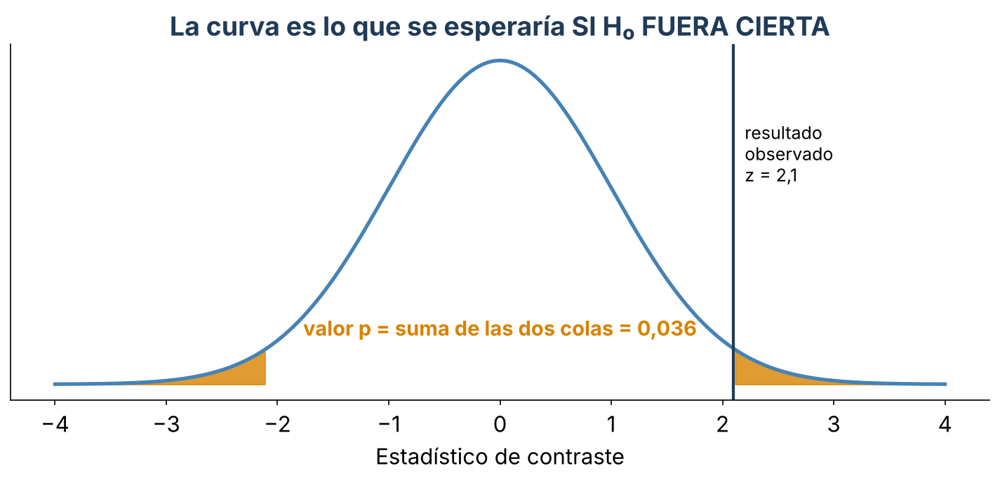
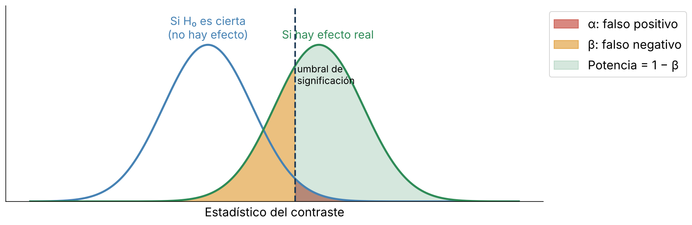
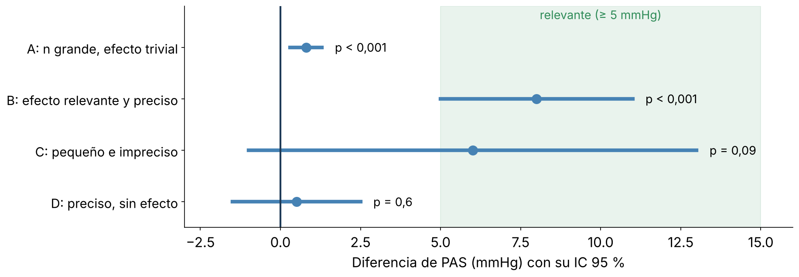

Bioestadística (1964) · Grado en Medicina · Curso 2027-2028
Tema 210Fundamentos del contraste de hipótesis: significación estadística, errores y potencia
Módulo 5. Generalización de conclusiones
Evaluación: el examen del Módulo 5 se hace con Colab. Practica ejecutando e interpretando cada análisis.
Fernando Borrás Rocher · Universidad Miguel Hernández de Elche · CC BY 4.0
Objetivos de aprendizaje
Al terminar esta sesión serás capaz de:
- Plantear la hipótesis nula y la alternativa de una pregunta clínica.
- Definir e interpretar correctamente el valor p.
- Distinguir los errores de tipo I y de tipo II, y definir la potencia de un estudio.
- Relacionar un contraste de hipótesis con el intervalo de confianza correspondiente.
- Distinguir significación estadística de relevancia clínica.
- Calcular el tamaño muestral necesario para alcanzar una potencia dada, y reconocer el riesgo de las comparaciones múltiples.
Cómo usar esta presentación
Usa el selector de arriba para dar el tema en una sesión completa o en dos sesiones intercaladas.
🎓 Sesión de clase magistral
- 1. Caso clínico de partida 5 min
- 2. Conceptos clave 10 min
- 5. Autoevaluación 5 min
Explica los conceptos, haz la pausa activa y cierra con las ideas clave.
💻 Sesión de Colab
- 3. Demostración: contrastar por simulación y con fórmulas 20 min
- 4. Práctica en la app Bioestadística 10 min
- 5. Autoevaluación 5 min
Cada estudiante abre su copia del cuaderno, predice el resultado y después ejecuta la celda.
Teclas: ← → para pasar · N notas del profesor · M cambiar de modo · F pantalla completa · Esc índice.
1. Caso clínico de partida
5 mmHg de diferencia, p = 0,03: ¿qué significa?

- Si el fármaco no hiciera nada, ¿con qué frecuencia el azar daría una diferencia así o mayor?
- Esa frecuencia es el valor p. No es la probabilidad de que el fármaco no funcione.
2. Conceptos clave
2.1 Las hipótesis

| Hipótesis | Qué afirma | En el caso |
|---|---|---|
| Nula ($H_0$) | No hay efecto ni diferencia: lo observado se debe al azar | La reducción media de la PAS es igual con fármaco y con placebo |
| Alternativa ($H_1$) | Hay un efecto o una diferencia | Las reducciones medias son distintas |
El contraste supone que $H_0$ es cierta y mide hasta qué punto los datos son compatibles con ella. Si son muy poco compatibles, se rechaza $H_0$.
El contraste es bilateral si $H_1$ admite diferencias en cualquier sentido, y unilateral si solo en uno. En Medicina se usan casi siempre contrastes bilaterales.
2. Conceptos clave
2.2 El valor p

El valor p es la probabilidad de obtener un resultado igual o más extremo que el observado si la hipótesis nula fuera cierta.
- p pequeño: los datos serían raros si $H_0$ fuera cierta; hay evidencia contra $H_0$.
- p grande: los datos son compatibles con $H_0$; no demuestra que $H_0$ sea cierta.
Por convenio, se fija un nivel de significación α = 0,05: si p < α, se dice que el resultado es «estadísticamente significativo». El umbral es arbitrario; p = 0,049 y p = 0,051 aportan prácticamente la misma evidencia.
Lo que el valor p NO es:
| Afirmación errónea | Por qué es errónea |
|---|---|
| «Es la probabilidad de que $H_0$ sea cierta» | Se calcula suponiendo que $H_0$ es cierta |
| «1 − p es la probabilidad de que el fármaco funcione» | El mismo error en sentido inverso |
| «Un p pequeño indica un efecto grande» | Con muestras grandes, efectos mínimos dan p muy pequeños |
| «p > 0,05 demuestra que no hay efecto» | Puede faltar potencia: ausencia de evidencia no es evidencia de ausencia |
2. Conceptos clave
2.3 Errores y potencia
Dos errores posibles y la potencia

- α: rechazar H₀ siendo cierta (falso positivo). β: no detectar un efecto real (falso negativo).
- Potencia = 1 − β: la probabilidad de detectar el efecto. Aumenta con n y con el tamaño del efecto.
2. Conceptos clave
2.4 Contraste e intervalo de confianza
El intervalo de confianza dice más que el valor p

- Si el IC 95 % de la diferencia no contiene el 0, p < 0,05; si lo contiene, p > 0,05.
- Pero solo el IC dice si el efecto puede ser clínicamente relevante o trivial.
Pregunta para la clase: ¿Cuál de estos cuatro estudios cambiaría vuestra práctica?
Pausa activa
Piensa 30 segundos, comenta con quien tienes al lado y vota.
Un ensayo obtiene p = 0,03. ¿Qué significa?
En la sesión de Colab
Lo que acabas de ver se comprueba con datos en el cuaderno del Tema 210.
- Abre el cuaderno y guarda tu copia: Archivo → Guardar una copia en Drive.
- Ejecuta la celda de configuración.
- Ve a la demostración y predice cada resultado antes de ejecutar.
3. Demostración: contrastar por simulación y con fórmulas
3.1 Los datos del ensayo
▶ En tu cuaderno: 3.1 Los datos del ensayo. Antes de ejecutar, escribe qué esperas obtener.
import numpy as np
from scipy import stats
import matplotlib.pyplot as plt
rng = np.random.default_rng(seed=197)
farmaco = rng.normal(8, 10, 40).round(1) # reducción de PAS (mmHg)
placebo = rng.normal(3, 10, 40).round(1)
diferencia_observada = farmaco.mean() - placebo.mean()
print(f"Reducción media: fármaco {farmaco.mean():.1f} mmHg · placebo {placebo.mean():.1f} mmHg")
print(f"Diferencia observada: {diferencia_observada:.1f} mmHg")3. Demostración: contrastar por simulación y con fórmulas
3.2 El valor p por simulación: la prueba de permutaciones
▶ En tu cuaderno: 3.2 El valor p por simulación: la prueba de permutaciones. Antes de ejecutar, escribe qué esperas obtener.
Si $H_0$ fuera cierta, la etiqueta «fármaco» o «placebo» sería irrelevante: cada paciente habría tenido la misma reducción con cualquiera de los dos. Podemos barajar las etiquetas muchas veces y ver qué diferencias produce el azar por sí solo. El valor p es la proporción de barajados con una diferencia tan grande o mayor que la observada.
todos = np.concatenate([farmaco, placebo])
diferencias_azar = []
for _ in range(10_000):
barajado = rng.permutation(todos)
diferencias_azar.append(barajado[:40].mean() - barajado[40:].mean())
diferencias_azar = np.array(diferencias_azar)
p_permutacion = (np.abs(diferencias_azar) >= abs(diferencia_observada)).mean()
plt.figure(figsize=(7, 4))
plt.hist(diferencias_azar, bins=60, color="lightsteelblue", edgecolor="white")
plt.axvline(diferencia_observada, color="firebrick", label=f"Observada: {diferencia_observada:.1f} mmHg")
plt.axvline(-diferencia_observada, color="firebrick", linestyle="--")
plt.xlabel("Diferencia de medias si H₀ fuera cierta (mmHg)")
plt.ylabel("Frecuencia")
plt.title(f"Distribución bajo H₀ · valor p ≈ {p_permutacion:.3f}")
plt.legend()
plt.show()3. Demostración: contrastar por simulación y con fórmulas
3.3 El mismo contraste con la fórmula: la prueba t
▶ En tu cuaderno: 3.3 El mismo contraste con la fórmula: la prueba t. Antes de ejecutar, escribe qué esperas obtener.
La prueba t de Student para dos muestras independientes (Tema 250) llega al mismo resultado sin simular. Calculamos también el IC 95 % de la diferencia.
resultado = stats.ttest_ind(farmaco, placebo)
ic = resultado.confidence_interval(confidence_level=0.95)
print(f"Prueba t: t = {resultado.statistic:.2f}, p = {resultado.pvalue:.3f}")
print(f"Valor p por permutación: {p_permutacion:.3f}")
print(f"Diferencia: {diferencia_observada:.1f} mmHg (IC 95 %: {ic.low:.1f} a {ic.high:.1f})")Interpretación completa: el fármaco redujo la PAS una media de unos 5 mmHg más que el placebo. Si en realidad no hubiera diferencia, una diferencia así de grande ocurriría en pocos ensayos de cada cien. El IC 95 % indica que el efecto real podría estar entre algo más de 0 y unos 10 mmHg. Es compatible con un efecto clínicamente pequeño y con uno relevante.
3. Demostración: contrastar por simulación y con fórmulas
3.4 Si H₀ es cierta, el 5 % de los estudios sale «significativo»
▶ En tu cuaderno: 3.4 Si H₀ es cierta, el 5 % de los estudios sale «significativo». Antes de ejecutar, escribe qué esperas obtener.
Simulamos 10.000 ensayos de un fármaco que no hace nada: los dos grupos salen de la misma población.
valores_p = np.array([stats.ttest_ind(rng.normal(3, 10, 40), rng.normal(3, 10, 40)).pvalue
for _ in range(10_000)])
print(f"Ensayos con p < 0,05: {(valores_p < 0.05).mean():.1%}")
plt.figure(figsize=(7, 3.5))
plt.hist(valores_p, bins=20, color="lightsteelblue", edgecolor="white")
plt.axvline(0.05, color="firebrick", linestyle="--", label="α = 0,05")
plt.xlabel("Valor p")
plt.ylabel("Número de ensayos")
plt.title("Bajo H₀, los valores p se reparten de manera uniforme")
plt.legend()
plt.show()Es el error de tipo I: con α = 0,05, uno de cada 20 ensayos de un fármaco inútil saldrá significativo. Si se publican solo esos (sesgo de publicación), la literatura sobreestima la eficacia.
3. Demostración: contrastar por simulación y con fórmulas
3.5 La potencia
▶ En tu cuaderno: 3.5 La potencia. Antes de ejecutar, escribe qué esperas obtener.
Ahora el fármaco sí reduce la PAS 5 mmHg más que el placebo. ¿Qué proporción de ensayos lo detecta según el número de pacientes por grupo?
tamanos = [10, 20, 40, 64, 100, 150]
potencias = []
for n in tamanos:
p = np.array([stats.ttest_ind(rng.normal(8, 10, n), rng.normal(3, 10, n)).pvalue for _ in range(2000)])
potencias.append((p < 0.05).mean())
print(f"n = {n:>3} por grupo: potencia ≈ {potencias[-1]:.0%}")
plt.figure(figsize=(7, 4))
plt.plot(tamanos, potencias, marker="o")
plt.axhline(0.8, color="gray", linestyle="--", label="Potencia del 80 %")
plt.xlabel("Pacientes por grupo")
plt.ylabel("Potencia")
plt.ylim(0, 1)
plt.title("Potencia para detectar una diferencia de 5 mmHg (σ = 10)")
plt.legend()
plt.show()Con 40 pacientes por grupo, la potencia es de alrededor del 60 %: cuatro de cada diez ensayos como el del caso no habrían detectado un efecto real. Un resultado no significativo en un estudio con poca potencia no permite concluir nada.
3. Demostración: contrastar por simulación y con fórmulas
3.6 El tamaño muestral para una potencia dada
▶ En tu cuaderno: 3.6 El tamaño muestral para una potencia dada. Antes de ejecutar, escribe qué esperas obtener.
La biblioteca statsmodels calcula el tamaño muestral a partir del tamaño del efecto estandarizado (d de Cohen = diferencia / σ), α y la potencia deseada.
from statsmodels.stats.power import TTestIndPower
analisis = TTestIndPower()
d = 5 / 10
for potencia in [0.8, 0.9]:
n = analisis.solve_power(effect_size=d, alpha=0.05, power=potencia)
print(f"Potencia {potencia:.0%}: {np.ceil(n):.0f} pacientes por grupo")3. Demostración: contrastar por simulación y con fórmulas
3.7 Significación estadística no es relevancia clínica
▶ En tu cuaderno: 3.7 Significación estadística no es relevancia clínica. Antes de ejecutar, escribe qué esperas obtener.
Con una muestra enorme, una diferencia trivial resulta «muy significativa»:
grande_a = rng.normal(130.0, 15, 20_000)
grande_b = rng.normal(130.8, 15, 20_000)
r = stats.ttest_ind(grande_a, grande_b)
ic = r.confidence_interval()
print(f"Diferencia: {grande_b.mean() - grande_a.mean():.2f} mmHg · p = {r.pvalue:.2e}")
print(f"IC 95 % de la diferencia: {-ic.high:.2f} a {-ic.low:.2f} mmHg")Una diferencia de menos de 1 mmHg es estadísticamente significativa, pero clínicamente irrelevante. La pregunta clínica no es «¿p < 0,05?», sino «¿es el efecto lo bastante grande para importar al paciente, y con qué precisión lo conocemos?».
Ampliación
Ampliación: comparaciones múltiples
Supón un estudio que compara 20 variables entre dos grupos sin ninguna diferencia real. La probabilidad de encontrar al menos una con p < 0,05 es $1 - 0{,}95^{20} \approx 0{,}64$ (Temas 140 y 180). Buscar hasta encontrar algo significativo se llama p-hacking. Lo veremos en el Tema 260, junto con las correcciones.
Ampliación
Ampliación: errores frecuentes
Interpretar p como la probabilidad de que $H_0$ sea cierta.
Concluir «no hay diferencias» a partir de p > 0,05 sin valorar la potencia ni el intervalo de confianza.
Confundir significación estadística con importancia clínica.
Dar solo el valor p, sin la estimación del efecto y su intervalo.
Decidir la hipótesis o el tipo de contraste después de ver los datos.
Tratar 0,05 como una frontera mágica: p = 0,049 y p = 0,051 son prácticamente la misma evidencia.
4. Práctica en la app Bioestadística
Abre la unidad 210 de la app Bioestadística y completa sus misiones:
- Misión básica (sin asistente): identificar interpretaciones correctas e incorrectas del valor p en frases tomadas de artículos.
- Misión clínica (con pistas): calcular el valor p de una diferencia de HbA1c entre dos pautas, por permutación y con la prueba t. Interpretar su IC.
- Misión reto (con asistente): calcular con el asistente el tamaño muestral de un ensayo y comprobarlo por simulación de la potencia. Redactar la justificación para el comité de ética.
Al terminar, exporta el informe de la unidad.
5. Autoevaluación
Responde sin asistente.
5. Autoevaluación
Elige una opción: verás la explicación.
Un ensayo obtiene p = 0,03. ¿Qué significa?
Un ensayo con 30 pacientes por grupo no encuentra diferencias significativas (p = 0,25). ¿Qué puede concluirse?
¿Qué es la potencia de un estudio?
La diferencia de PAS entre dos tratamientos es 6 mmHg (IC 95 %: −1 a 13). ¿Qué puedes decir del valor p bilateral?
Se comparan 10 variables entre dos grupos que en realidad no difieren. ¿Qué probabilidad hay de al menos un resultado con p < 0,05?
Ideas clave
- El contraste mide la compatibilidad de los datos con $H_0$; el valor p no es la probabilidad de que $H_0$ sea cierta.
- p > 0,05 no demuestra la ausencia de efecto, sobre todo si la potencia es baja.
- α es el riesgo de falso positivo; β, el de falso negativo; 1 − β es la potencia.
- El intervalo de confianza da la misma decisión que el contraste y, además, la magnitud del efecto.
- Significación estadística no es relevancia clínica.
Glosario
| Término | Definición |
|---|---|
| Hipótesis nula ($H_0$) | Afirmación de ausencia de efecto o diferencia |
| Hipótesis alternativa ($H_1$) | Afirmación de que existe efecto o diferencia |
| Valor p | Probabilidad de un resultado igual o más extremo que el observado si $H_0$ fuera cierta |
| Nivel de significación (α) | Umbral de p por debajo del cual se rechaza $H_0$ |
| Error de tipo I | Rechazar $H_0$ siendo cierta (falso positivo) |
| Error de tipo II | No rechazar $H_0$ siendo falsa (falso negativo) |
| Potencia | Probabilidad de rechazar $H_0$ cuando es falsa |
| Tamaño del efecto | Magnitud de la diferencia, con frecuencia estandarizada (d de Cohen) |
| Prueba de permutaciones | Contraste que obtiene la distribución bajo $H_0$ barajando las etiquetas de los grupos |
| p-hacking | Multiplicar análisis hasta obtener un resultado significativo |
Para saber más
- Wasserstein RL, Lazar NA. The ASA statement on p-values: context, process, and purpose. Am Stat. 2016;70(2):129-133. doi:10.1080/00031305.2016.1154108
- Altman DG, Bland JM. Absence of evidence is not evidence of absence. BMJ. 1995;311(7003):485. doi:10.1136/bmj.311.7003.485
- Greenland S, et al. Statistical tests, P values, confidence intervals, and power: a guide to misinterpretations. Eur J Epidemiol. 2016;31(4):337-350. doi:10.1007/s10654-016-0149-3